Introduction
최효리 CHOI HYO RI
AGE
TEL
MAIL
1998 09 07 (만 26세)
010 4822 3818
hyo.lee775@gmail.com
-
Background
성장배경
저는 대전광역시에서 3자매 중 장녀로 자라며 자연스럽게 책임감과 강한 멘탈을 키워왔습니다.
대학 시절에는 카페, 올리브영, 음식점, 배스킨라빈스 등 다양한 아르바이트를 경험하며
새로운 일에 도전하는 데 거부감이 없고, 새로운 환경에 빠르게 적응하는 능력을 갖추게 되었습니다.
또한, 맡은 일에 최선을 다하는 태도를 통해 책임감 있는 사람으로 꾸준히 성장해왔습니다.저는 대전광역시에서 3자매 중 장녀로 자라며
자연스럽게 책임감과 강한 멘탈을 키워왔습니다.대학 시절에는카페, 올리브영, 음식점, 배스킨라빈스 등 다양한 아르바이트를 경험하며, 새로운 일에
도전하는 데 거부감이 없고, 새로운 환경에
빠르게 적응하는 능력을 갖추게 되었습니다.
또한, 맡은 일에 최선을 다하는 태도를 통해
책임감 있는 사람으로
꾸준히 성장해왔습니다.Education & Experience
학력 및 경험
14.03 - 17.02
18.03 - 23.02
23.05 - 24.12대전 반석고등학교 졸업
대전 목원대학교 시각디자인 학과 졸업
브이웍스디자인 웹팀 근무14.03 - 17.02
18.03 - 23.02
23.05 - 24.12대전 반석고등학교 졸업
대전 목원대학교
시각디자인학과 졸업
브이웍스디자인 웹팀 근무Strengths
장단점
저는 웹디자이너로 1년 반 동안 약 90개 이상의 홈페이지를 디자인하며 빠르게 일하는 능력과
꾸준히 성과를 내는 실력을 갖추게 되었습니다. 다양한 스타일의 디자인을 해오면서 고객의 요구에 맞는
창의적인 결과물을 만들어내는 데 자신이 있습니다.디자인 작업뿐만 아니라 프로젝트 기획에도 참여해 모션 아이디어를 내고 문구를 기획하는 등
다양한 방식으로 기여해 왔습니다. 이런 경험을 통해 디자인뿐 아니라 프로젝트 전체를 이해하고 돕는 데
필요한 역량을 키울 수 있었습니다.다만, 여러 프로젝트를 동시에 진행할 때 세부 사항을 놓치는 경우가 있기도 했습니다.
이를 보완하기 위해 메모 프로그램과 체크리스트를 활용하며 실수를 줄여가고 있습니다.
덕분에 요즘은 더 정확하고 체계적으로 일을 처리할 수 있게 되었습니다.저는 웹디자이너로 1년 반 동안 약 80개 이상의
홈페이지를 디자인하며 빠르게 일하는 능력과
꾸준히 성과를 내는 실력을 갖추게 되었습니다.
다양한 스타일의 디자인을 해오면서
고객의 요구에 맞는 창의적인 결과물을
만들어내는 데 자신이 있습니다.디자인 작업뿐만 아니라 프로젝트 기획에도 참여해
모션 아이디어를 내고 문구를 기획하는 등
다양한 방식으로 기여해 왔습니다.
이런 경험을 통해 디자인뿐 아니라 프로젝트 전체를
이해하고 돕는 데 필요한 역량을 키울 수 있었습니다.다만, 여러 프로젝트를 동시에 진행할 때
세부 사항을 놓치는 경우가 있기도 했습니다.
이를 보완하기 위해 메모 프로그램과
체크리스트를 활용하며 실수를 줄여가고 있습니다.
덕분에 요즘은 더 정확하고 체계적으로
일을 처리할 수 있게 되었습니다.창의적인
빠른 작업 능력
팀워크
Skills
100 %Ai
100 %Ps
70 %Xd
Simple
깔끔한
PROJECT 01
영칼로리포케
자세히 보기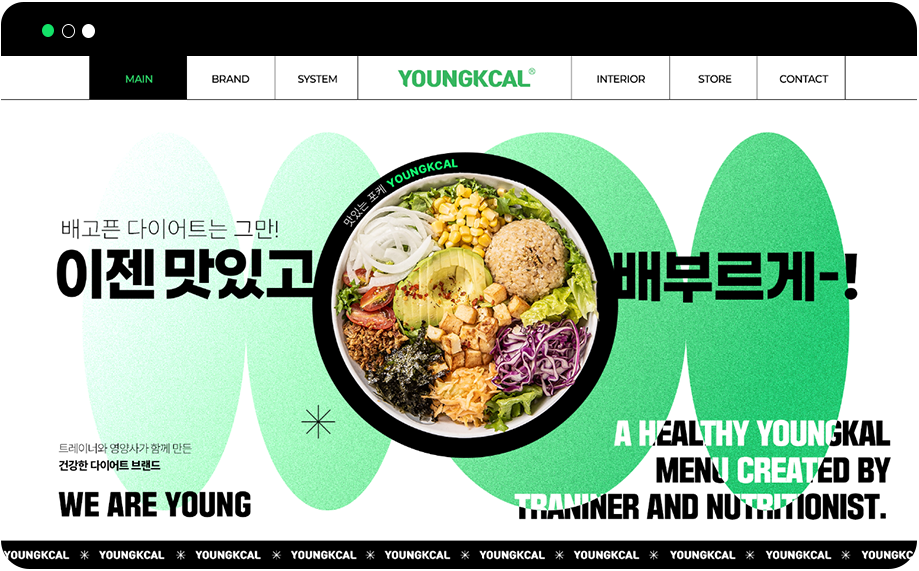기여도
100 %기획
100 %디자인
Concept
포케의 그린 컬러를 브랜드 컬러에 맞춰 설정하고,
브랜드 굿즈와 잘 어울리는 오브젝트를 활용해 힙하고 트렌디한 디자인을 완성했습니다.
이 과정을 통해 브랜드의 이미지를 현대적이고 세련되게 표현하며,
더욱 스타일리시한 느낌을 강조했습니다.포케의 그린 컬러를 브랜드 컬러에 맞춰 설정하고,
브랜드 굿즈와 잘 어울리는 오브젝트를 활용해
힙하고 트렌디한 디자인을 완성했습니다.이 과정을 통해 브랜드의 이미지를 현대적이고
세련되게 표현하며, 더욱 스타일리시한 느낌을
강조했습니다.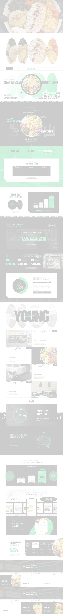PROJECT 02
도스마스
자세히 보기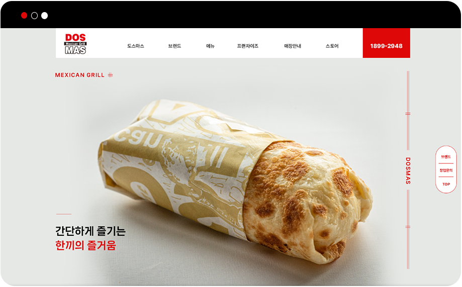기여도
100 %디자인
Concept
많은 컬러를 사용하지 않고, 포인트 컬러 하나만을 강조하여 깔끔하고 심플한 디자인을 완성했습니다.
이로 인해 전체적인 느낌이 더욱 세련되면서도 집중된 시각적 효과를 주었습니다.많은 컬러를 사용하지 않고, 포인트 컬러 하나만을
강조하여 깔끔하고 심플한 디자인을 완성했습니다.
이로 인해 전체적인 느낌이 더욱 세련되면서도
집중된 시각적 효과를 주었습니다.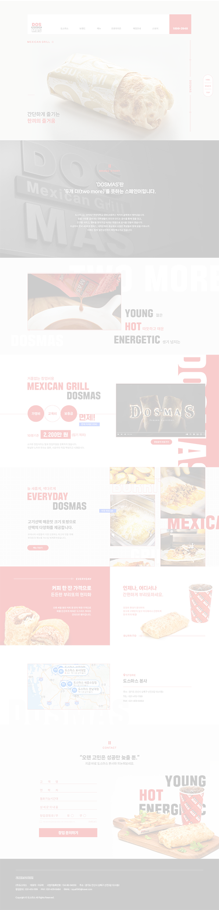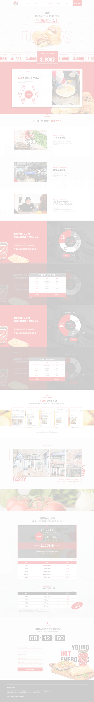PROJECT 03
홈즈앤루팡
자세히 보기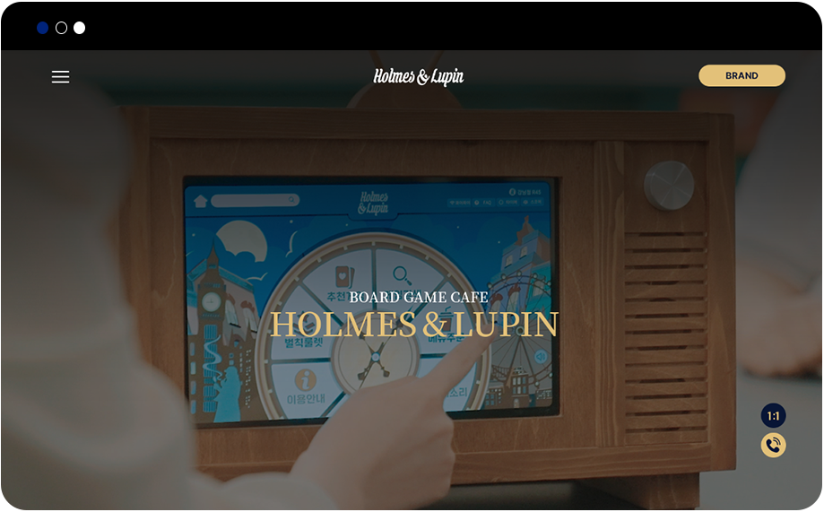기여도
100 %디자인
Concept
브랜드 컨셉에 맞춰 '홈즈'와 '루팡'의 분위기를 과하지 않게, 적절한 오브젝트를 활용하여
깔끔하면서도 브랜드 아이덴티티를 확실히 전달하는 디자인을 작업했습니다.
탐정이라는 테마를 자연스럽게 녹여내어 브랜드의 고유한 이미지를 한층 더 강조했습니다.브랜드 컨셉에 맞춰 '홈즈'와 '루팡'의 분위기를
과하지 않게, 적절한 오브젝트를 활용하여
깔끔하면서도 브랜드 아이덴티티를 확실히 전달하는
디자인을 작업했습니다.탐정이라는 테마를 자연스럽게 녹여내어
브랜드의 고유한 이미지를 한층 더 강조했습니다.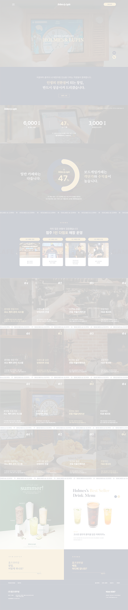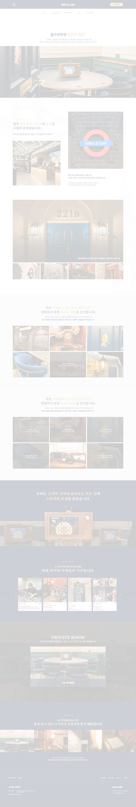PROJECT 04
미라트스튜디오
자세히 보기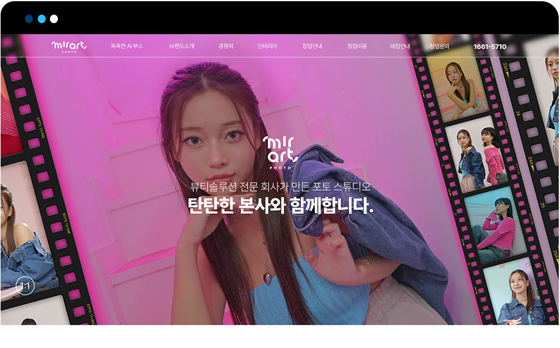기여도
50 %기획
100 %디자인
Concept
아트 스튜디오에 맞춰 다양한 요소와 모션을 활용해 디자인했지만, 삽입된 이미지들이
분산되어 강조되지 않을 수 있다는 점을 고려해, 과하지 않도록 절제했습니다.
스튜디오의 핵심인 프레임과 사진이 돋보일 수 있도록 균형감 있게 구성했습니다.아트 스튜디오에 맞춰 다양한 요소와 모션을 활용해
디자인했지만, 삽입된 이미지들이 분산되어
강조되지 않을 수 있다는 점을 고려해,과하지 않도록
절제했습니다.스튜디오의 핵심인 프레임과 사진이 돋보일 수 있도록 균형감 있게 구성했습니다.
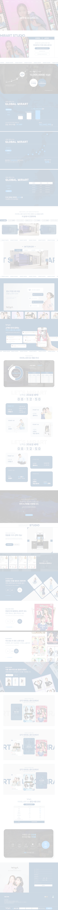Character
귀여운
PROJECT 05
벤티버거
자세히 보기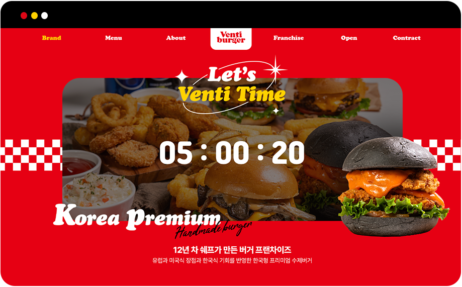기여도
50 %기획
100 %디자인
Concept
벤티버거의 로고 이미지와 인테리어를 참고해 강렬한 색감으로 시각적인 임팩트를 주었으며,
버거의 둥근 형태를 포인트로 활용하여 레이아웃과 모션에 재미있는 요소를 가미해 작업했습니다.벤티버거의 로고 이미지와 인테리어를 참고해
강렬한 색감으로 시각적인 임팩트를 주었으며,
버거의 둥근 형태를 포인트로 활용하여 레이아웃과 모션에 재미있는 요소를 가미해 작업했습니다.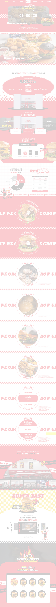PROJECT 06
스트릿캔
자세히 보기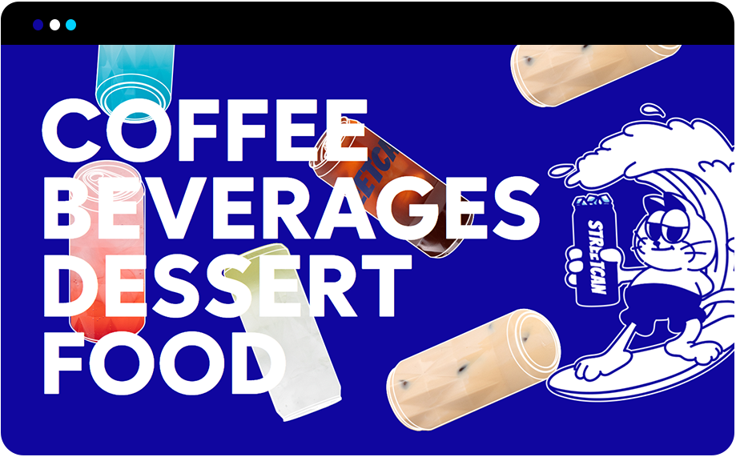기여도
100 %기획
70 %디자인
Concept
스트릿캔은 로고와 포스터 디자인을 참고하여, 캔에 음료가 채워지는 모션과
뚜껑이 열리는 모션 등 재미있는 연출을 시도하며 다양한 레이아웃을 실험한 작업입니다.
또한, 브랜드 캐릭터를 활용해 귀엽고 트렌디한 분위기를 강조하는 방향으로 기획을 진행했습니다.스트릿캔은 로고와 포스터 디자인을 참고하여,
캔에 음료가 채워지는 모션과 뚜껑이 열리는 모션 등
재미있는 연출을 시도하며 다양한 레이아웃을
실험한 작업입니다.또한, 브랜드 캐릭터를 활용해 귀엽고 트렌디한 분위기를
강조하는 방향으로 기획을 진행했습니다.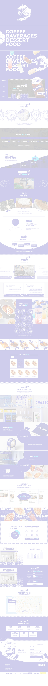PROJECT 07
마요네즈
자세히 보기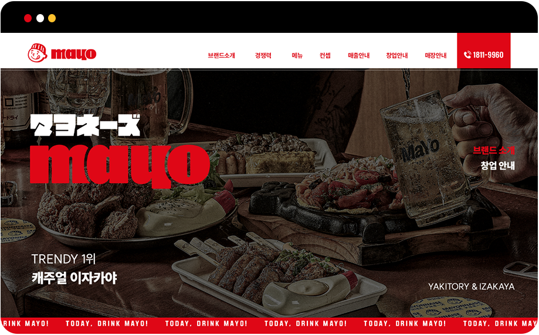기여도
100 %디자인
Concept
‘마요네즈’ 브랜드는 캐주얼 이자카야 콘셉트로, 귀여운 로고 캐릭터와
일본 특유의 분위기를 트렌디하게 해석하여 디자인한 작업입니다.
특히, 마요네즈가 뿌려지는 모습을 표현한 오브젝트를 문구 강조에 활용해,
자칫 밋밋할 수 있는 페이지 구성에 재미 요소를 더했습니다.‘마요네즈’ 브랜드는 캐주얼 이자카야 콘셉트로,
귀여운 로고 캐릭터와 일본 특유의 분위기를 트렌디하게
해석하여 디자인한 작업입니다.특히, 마요네즈가 뿌려지는 모습을 표현한 오브젝트를
문구 강조에 활용해, 자칫 밋밋할 수 있는 페이지 구성에
재미 요소를 더했습니다.
PROJECT 08
에브리커피
자세히 보기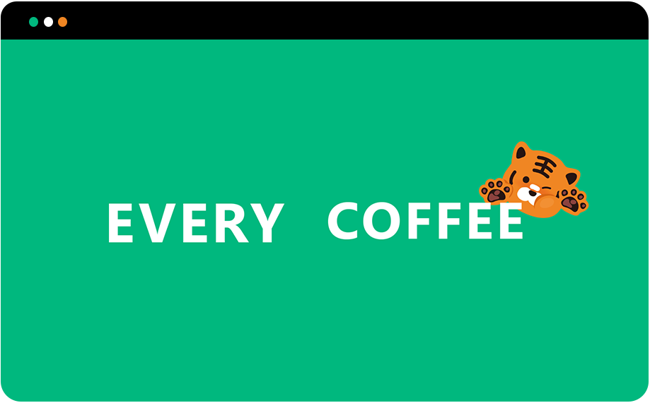기여도
50 %기획
100 %디자인
Concept
캐릭터와 다양한 일러스트를 활용해 전체적인 콘셉트를 귀여움에 초점을 맞춰 디자인한 작업입니다.
브랜드의 아이덴티티를 살리기 위해 일러스트 요소를 적극적으로 적용했으며,
페이지 구성 또한 일러스트 위주로 구성하여 통일감을 주고 보는 재미를 더했습니다.캐릭터와 다양한 일러스트를 활용해 전체적인 콘셉트를
귀여움에 초점을 맞춰 디자인한 작업입니다.브랜드의 아이덴티티를 살리기 위해 일러스트 요소를
적극적으로 적용했으며, 페이지 구성 또한 일러스트 위주로
구성하여 통일감을 주고 보는 재미를 더했습니다.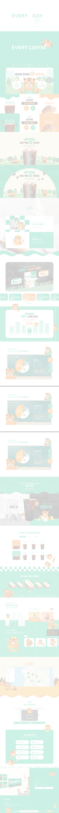Retro
레트로
PROJECT 09
하타네
자세히 보기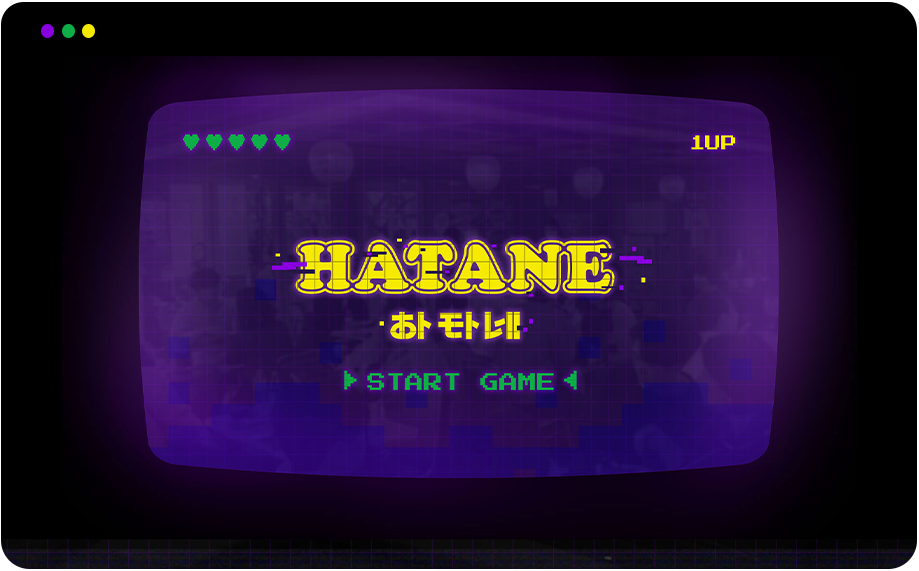기여도
50 %기획
100 %디자인
Concept
일본 편의점, 네온 간판 요소의 인테리어와 귀여운 로고 캐릭터를 참고하여,
귀여우면서 시티팝적인 분위기로 컨셉을 해석했습니다. 또한, 조이스틱 게임기와
CD 플레이어 등 레트로한 영상 요소를 중심으로 시각적으로 다양한 재미를 주었으며,
전체적인 디자인에 감각적이고 복고풍의 매력을 더한 작업입니다.일본 편의점, 네온 간판 요소의 인테리어와 귀여운
로고 캐릭터를 참고하여, 귀여우면서 시티팝적인
분위기로 컨셉을 해석했습니다.또한, 조이스틱 게임기와 CD 플레이어 등
레트로한 영상 요소를 중심으로 시각적으로
다양한 재미를 주었으며 전체적인 디자인에 감각적이고
복고풍의 매력을 더한 작업입니다.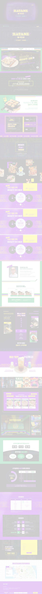PROJECT 10
4도씨맥주
자세히 보기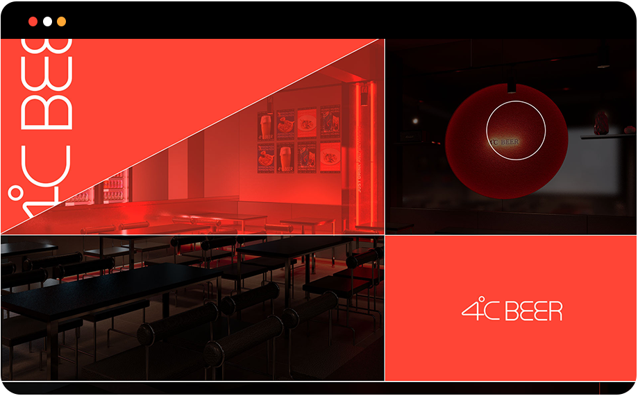기여도
50 %기획
100 %디자인
Concept
4도씨맥주의 ‘4’를 시각적으로 활용하여 다양한 레이아웃을 구성한 작업으로,
매장 간판과 인테리어를 참고하여 주점의 분위기를 살렸습니다.
특히, 네온사인의 느낌을 강조하여 밤거리의 감성적인 분위기를 만들어낸 디자인입니다.4도씨맥주의 ‘4’를 시각적으로 활용하여 다양한
레이아웃을 구성한 작업으로, 매장 간판과 인테리어를
참고하여 주점의 분위기를 살렸습니다.특히, 네온사인의 느낌을 강조하여 밤거리의 감성적인
분위기를 만들어낸 디자인입니다.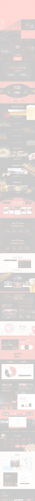PROJECT 11
다이닝야경
자세히 보기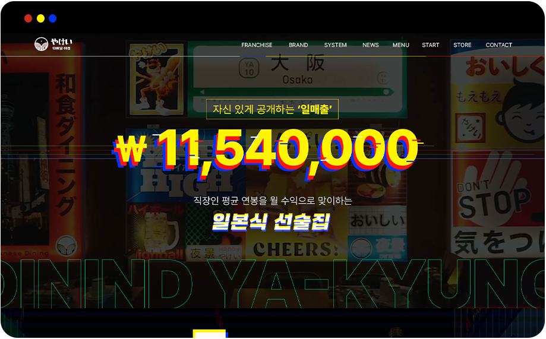기여도
50 %기획
100 %디자인
Concept
일본식 술집으로, 이전 작업인 하타네와 비슷하지만 귀여움보다는
레트로한 일본 감성에 더 초점을 두었습니다. 강렬한 원색 색감과 네온 간판,
그리고 인테리어 요소를 활용해 일본 레트로 감성을 강조한 디자인 작업입니다.일본식 술집으로, 이전 작업인 하타네와 비슷하지만
귀여움보다는 레트로한 일본 감성에 더 초점을 두었습니다. 강렬한 원색 색감과 네온 간판, 그리고 인테리어 요소를
활용해 일본 레트로 감성을 강조한 디자인 작업입니다.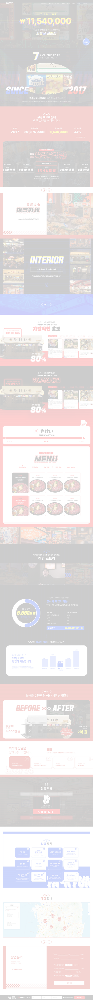PROJECT 12
당근돼지갈비후라이드
자세히 보기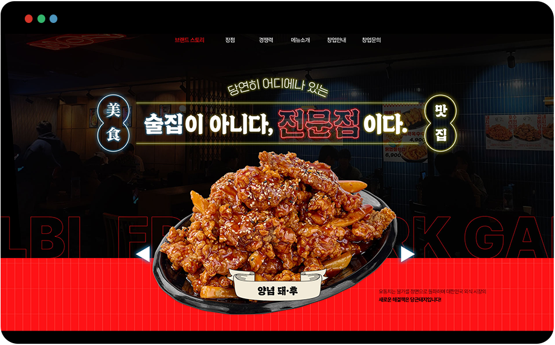기여도
100 %디자인
Concept
많은 디자인 요소를 사용하지 않고 선명한 색감으로 주요 부분을 강조하며,
차분한 색감으로 전체적으로 자연스럽게 조화시켜 페이지가 너무 어둡거나 칙칙하지 않도록
균형 있게 디자인한 작업입니다.많은 디자인 요소를 사용하지 않고 선명한 색감으로
주요 부분을 강조하며, 차분한 색감으로 전체적으로
자연스럽게 조화시켜 페이지가 너무 어둡거나
칙칙하지 않도록 균형 있게 디자인한 작업입니다.
PROJECT 13
청고장
자세히 보기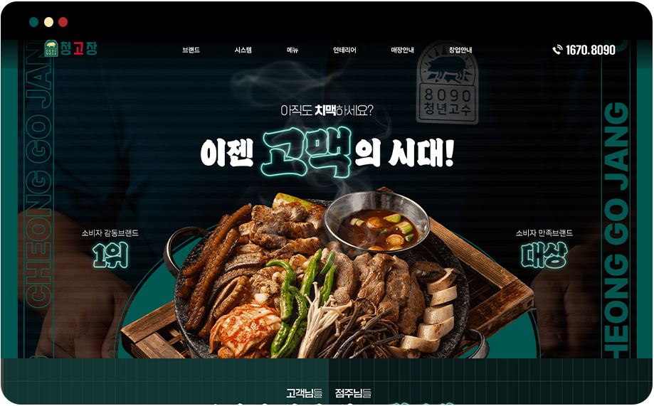기여도
100 %기획
50 %디자인
Concept
청고장은 더 이상 고기가 부담스럽고 번거로운 음식이 아니라, 치킨처럼 가볍게 즐길 수 있는
'고기형 주점'이 컨셉으로 ‘치맥 대신 고맥’이라는 슬로건을 참고하여, 이를 바탕으로
브랜드의 메시지가 잘 전달될 수 있도록 레이아웃과 문구를 밝고 가벼운 분위기로 기획하였습니다.청고장은 더 이상 고기가 부담스럽고 번거로운
음식이 아니라, 치킨처럼 가볍게 즐길 수 있는
'고기형 주점'이 컨셉으로 ‘치맥 대신 고맥’이라는
슬로건을 참고하여, 이를 바탕으로 브랜드의 메시지가
잘 전달될 수 있도록 레이아웃과 문구를 밝고 가벼운
분위기로 기획하였습니다.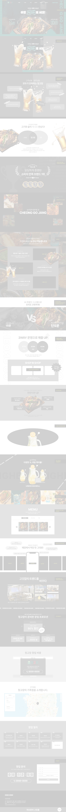Oriental
동양풍
PROJECT 14
장안라운지
자세히 보기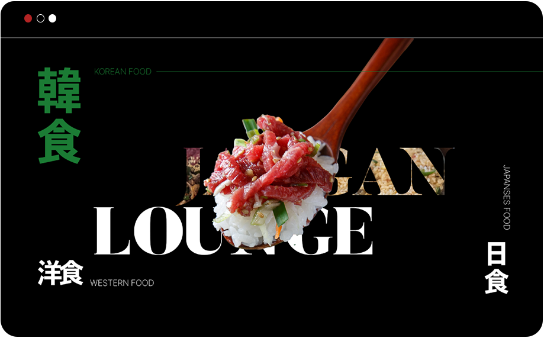기여도
50 %기획
100 %디자인
Concept
한국, 중국, 일본 퓨전주점인 브랜드의 특성을 고려하여, 인트로 페이지에서 타 프랜차이즈 페이지와
차별화를 두기 위해 스크롤 반응을 활용해 세 가지 메뉴를 노출시키는 방식으로 인트로 부분을
강조한 레이아웃을 구성했습니다. 그 외의 페이지는 홈페이지가 지나치게 복잡해지지 않도록
동양적인 분위기를 살려 차분하게 디자인했습니다.한국, 중국, 일본 퓨전주점인 브랜드의 특성을 고려하여,
인트로 페이지에서 타 프랜차이즈 페이지와
차별화를 두기 위해 스크롤 반응을 활용해 세 가지 메뉴를
노출시키는 방식으로 인트로 부분을 강조한 레이아웃을
구성했습니다. 그 외의 페이지는 홈페이지가 지나치게
복잡해지지 않도록 동양적인 분위기를 살려
차분하게 디자인했습니다.
PROJECT 15
강창구찹쌀진순대
자세히 보기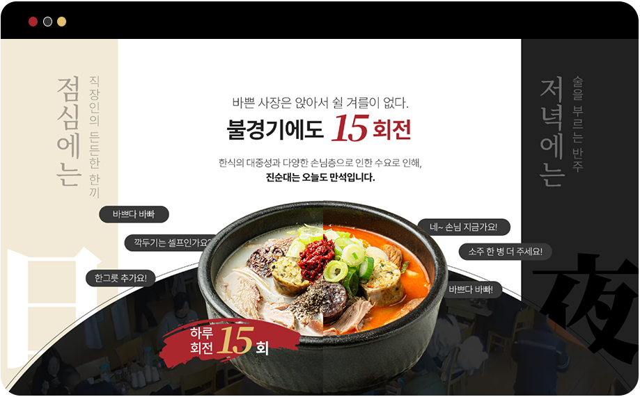기여도
50 %기획
100 %디자인
Concept
국밥의 원형을 포인트로 레이아웃을 잡아 작업을 진행했으며,
한국 전통 음식인국밥 홈페이지인 만큼 전통적인 분위기를 살리되,
너무 촌스럽지 않도록 현대적인 감각을 더해 세련되게 디자인한 작업입니다.국밥의 원형을 포인트로 레이아웃을 잡아
작업을 진행했으며, 한국 전통 음식인국밥 홈페이지인 만큼
전통적인 분위기를 살리되, 너무 촌스럽지 않도록 현대적인
감각을 더해 세련되게 디자인한 작업입니다.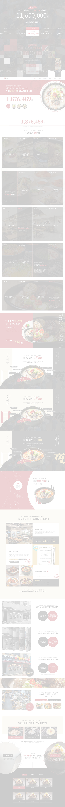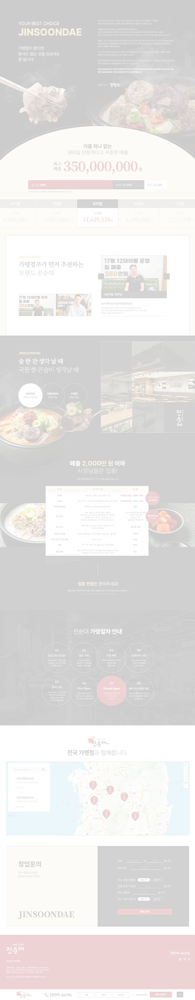PROJECT 16
강경불고기
자세히 보기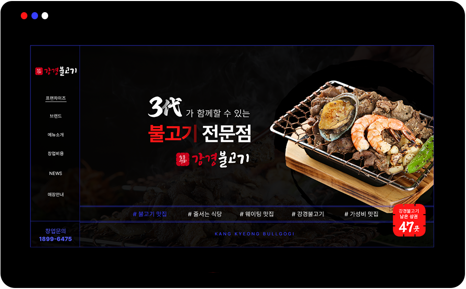기여도
100 %디자인
Concept
한국의 대표 음식인 불고기를 표현하기 위해 한국적인 요소를 살리고자 태극기 컬러인
파랑, 빨강, 검정, 흰색을 활용하여 디자인했습니다. 자칫 촌스러워질 수 있는 컬러들을
선을 사용해 전통적인 느낌을 강조하면서 깔끔하게 구성한 작업입니다.한국의 대표 음식인 불고기를 표현하기 위해
한국적인 요소를 살리고자 태극기 컬러인
파랑, 빨강, 검정, 흰색을 활용하여 디자인했습니다.
자칫 촌스러워질 수 있는 컬러들을 선을 사용해
전통적인 느낌을 강조하면서 깔끔하게 구성한 작업입니다.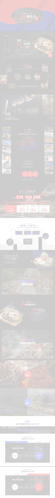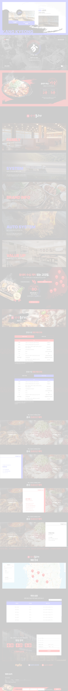PROJECT 17
괭이부리마을
자세히 보기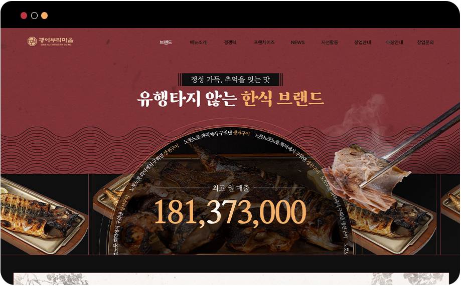기여도
70 %디자인
Concept
생선구이가 주인 한식 브랜드의 특성을 고려하여 전통적인 요소를 사용해 디자인하였으며,
생선을 잡는 바다와 나물의 산을 중의적으로 연상시키는 물결을 주요 요소로 활용했습니다.
또한, 화덕구이인 점을 반영하여 불의 요소를 적절히 사용해 바다 느낌이 지나치게 강조되어
해산물을 연상시키지 않도록 신중하게 디자인을 진행했습니다.생선구이가 주인 한식 브랜드의 특성을 고려하여
전통적인 요소를 사용해 디자인하였으며,
생선을 잡는 바다와 나물의 산을 중의적으로 연상시키는
물결을 주요 요소로 활용했습니다.또한, 화덕구이인 점을 반영하여 불의 요소를
적절히 사용해 바다 느낌이 지나치게 강조되어 해산물을
연상시키지 않도록 신중하게 디자인을 진행했습니다.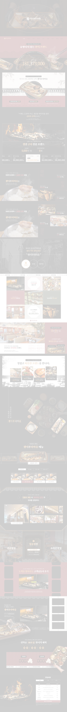Cozy
감성적인
PROJECT 18
뽁당
자세히 보기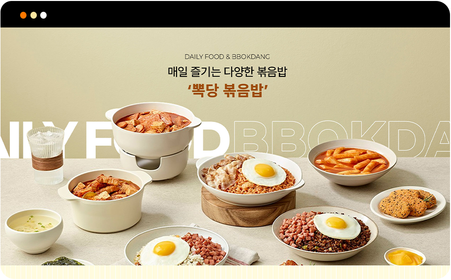기여도
100 %기획
Concept
캐릭터를 활용한 기존 홈페이지를 리뉴얼한 작업으로, 기존의 귀엽고 재미적인 요소들이
유치하게 느껴질 수 있어 이 부분을 최대한 보완하였습니다. 캐릭터 사용을 자제하고,
깔끔하고 진중한 느낌을 주기 위해 뽁당만의 컬러를 사용하여 감성적이고 따뜻한 분위기를 풀어낸 작업입니다.캐릭터를 활용한 기존 홈페이지를 리뉴얼한 작업으로
기존의 귀엽고 재미적인 요소들이 유치하게
느껴질 수 있어 이 부분을 최대한 보완하였습니다.캐릭터 사용을 자제하고, 깔끔하고 진중한 느낌을
주기 위해 뽁당만의 컬러를 사용하여 감성적이고
따뜻한 분위기를 풀어낸 작업입니다.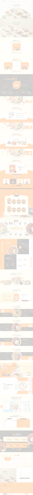PROJECT 19
빙수당
자세히 보기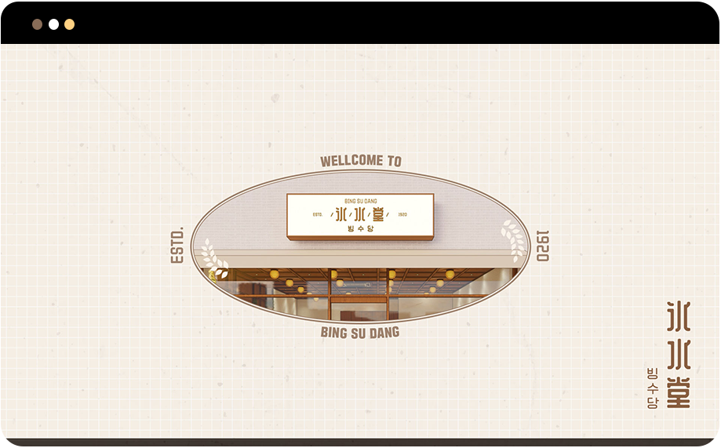기여도
100 %디자인
Concept
인테리어와 로고를 참고하여 한국의 전통적인 한옥 분위기를 바탕으로 색감을 설정하였습니다.
너무 과하게 전통적인 느낌을 주지 않으면서도, 브랜드만의 감성적인 분위기를 잘 살리기 위해
섬세하게 작업한 디자인입니다. 이로 인해 현대적인 카페 느낌과 전통적인 찻집 분위기가 자연스럽고
조화롭게 어우러지도록 구성하였습니다.인테리어와 로고를 참고하여 한국의 전통적인
한옥 분위기를 바탕으로 색감을 설정하였습니다.
너무 과하게 전통적인 느낌을 주지 않으면서도,
브랜드만의 감성적인 분위기를 잘 살리기 위해
섬세하게 작업한 디자인입니다. 이로 인해 현대적인 카페
느낌과 전통적인 찻집 분위기가 자연스럽고
조화롭게 어우러지도록 구성하였습니다.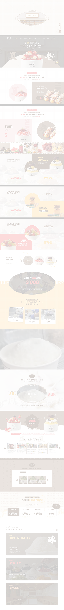
PROJECT 20
시올돈
자세히 보기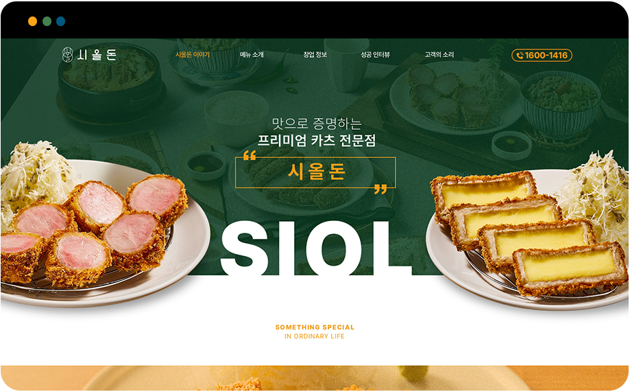기여도
100 %디자인
Concept
일본식 돈카츠 프랜차이즈 브랜드로, 따뜻한 색감의 일본 가정식을 떠올리게 하는
깔끔하고 따뜻한 색감을 컨셉으로 하였습니다. 너무 과하게 전통적이거나
일본풍이 강조되지 않도록 신경 썼으며, 컬러감이 매력적으로 느껴지도록 디자인한 작업입니다.일본식 돈카츠 프랜차이즈 브랜드로
일본 가정식을떠올리게 하는 깔끔하고 따뜻한 색감을
컨셉으로 하였습니다. 너무 과하게 전통적이거나
일본풍이 강조되지 않도록 신경 썼으며,
컬러감이 매력적으로 느껴지도록 디자인한 작업입니다.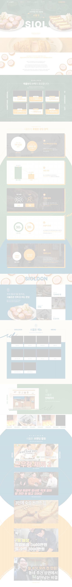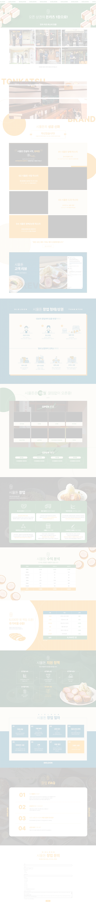PROJECT 21
사실빙
자세히 보기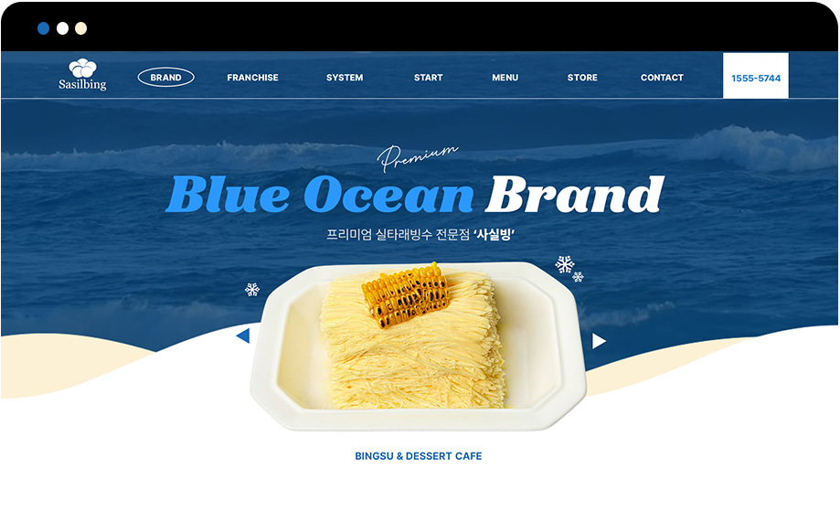기여도
100 %디자인
Concept
사실빙은 해운대 빙수 카페 맛집이라는 특성을 활용하여 은은하게 바다 요소를
페이지 내에 삽입하였습니다 감성적인 무드를 해치지 않기 위해 과하게 패턴이나
일러스트 요소를 사용하지 않고, 부드러운 느낌을 주는 방식으로 디자인한 작업입니다.사실빙은 해운대 빙수 카페 맛집이라는 특성을 활용하여
은은하게 바다 요소를 페이지 내에 삽입하였습니다.
감성적인 무드를 해치지 않기 위해 과하게 패턴이나
일러스트 요소를 사용하지 않고, 부드러운 느낌을 주는
방식으로 디자인한 작업입니다.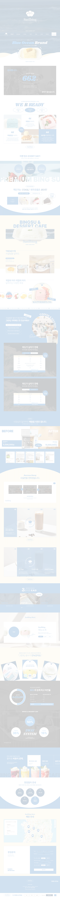